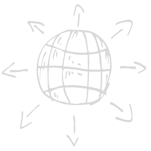
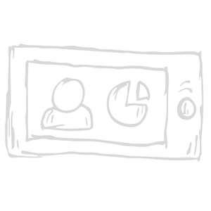
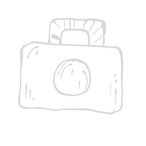
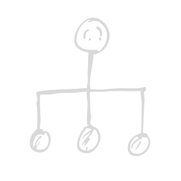

<!DOCTYPE html>
<html lang="en">
<head>
    <meta charset="UTF-8">
    <meta name="viewport" content="width=device-width, initial-scale=1.0">
    <title>main page</title>
<link rel="stylesheet" href="./style_blank_reset.css">
<link rel="stylesheet" href="./style.css">
</head>
<body class="page">
    <aside class="social-media">
        <nav class="social-media__blog">
            
            <a class= "social-media__blog--linkdesign" href="http://www.blogger.com" target="_blank" rel="noopener noreferrer"> go to blogger</a>
        </nav>
        <nav class="social-media__twitter">
            
            <a class= "social-media__blog--linkdesign" href="http://www.twitter.com" target="_blank" rel="noopener noreferrer">go to twitter</a>
        </nav>
        <nav class="social-media__linkedin">
            
            <a class= "social-media__blog--linkdesign" href="http://www.linkedin.com" target="_blank" rel="noopener noreferrer">go to linkedin</a>
        </nav>
        <nav class="social-media__facebook">
            
            <a class= "social-media__blog--linkdesign" href="http://www.facebook.com" target="_blank" rel="noopener noreferrer"> go to facebook</a>
        </nav>
        <nav class="social-media__github">
            
            <a class= "social-media__blog--linkdesign" href="http://www.github.com" target="_blank" rel="noopener noreferrer">go to github</a>
        </nav>
    </aside> 
</body>
</html>